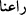
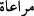

108. Yoksa siz de (ey müslümanlar), daha önce Mûsâ’ya sorulduğu gibi
peygamberinize sorular sormak mı istiyorsunuz? Kim îmânı küfre değişirse,
şüphesiz dosdoğru yoldan sapmış olur.
109. Ehl-i kitaptan çoğu, hakîkat kendilerine apaçık belli olduktan sonra, sırf
içlerindeki kıskançlıktan ötürü, sizi îmânınızdan vazgeçirip küfre döndürmek
istediler. Yine de siz, Allah onlar hakkındaki emrini getirinceye kadar affedip
bağışlayın. Şüphesiz Allah her şeye kadirdir.
110. Namazı kılın, zekâtı verin, önceden kendiniz için yaptığınız her iyiliği
Allah’ın katında bulacaksınız. Şüphesiz Allah, yapmakta olduklarınızı noksansız
görür.
111. (Ehl-i kitap:) Yahûdîler yahut hıristiyanlar hâriç hiç kimse cennete
giremeyecek, dediler. Bu onların kuruntusudur. Sen de onlara: Eğer sahîden doğru
söylüyorsanız delîlinizi getirin, de.
112. Bilâkis, kim muhsin olarak yüzünü Allah’a döndürürse (Allah’a hakkıyla
kulluk ederse) onun ecri Rabbi katındadır. Öyleleri için ne bir korku vardır, ne de
üzüntü çekerler.
“Ey îmân edenler peygambere “bizi gözet (râinâ) demeyin” sözünde mü’minleri
doğruyu söylemeye bir teşvik vardır.
( __WORD__ ) “Râinâ” kelimesinin masdarı olan ( __WORD__ ) “mürâa”, korumada aşırılığa gitme
mânâsındadır. Bu da başkasını koruma, işlerini kollama ve menfaatini gözetleme
mânâsınadır.
Müslümanlar, kendilerine Hz. Peygamber (s.a)’den bilgi geldiğinde: “Yâ Rasûlallah,
“râinâ” bizi gözet; söylediğin şeyleri teennî ile söyle ki, ne dediğini anlayalım”
derlerdi. Yahûdîler arasında İbrânîce veya Süryânîce olduğu söylenen bir kelime vardı
ki, yahûdîler bu kelimeyle birbirlerine söverlerdi. İşte bu da ( __WORD__ ) “râinâ”
kelimesiydi. Yahûdîler, müslümanların ağzından da bu kelimeyi duyunca bunu fırsat
bilip Hz. Peygamber’e bununla hıtâb ettiler. Tabîî bununla sövmeyi kasdediyorlardı. Bu
sözle, yahûdîlerin kasdettiği karışmasın diye mü’minler kesin olarak bundan
men’olundular ve karışıklığa mahal vermeyen bir kelimeyi kullanmakla emrolundular.
“Ey mü’minler “unzurnâ” bizi bekle, deyin ve dinleyin. Bu kelime ( __WORD__ ) “nazar”
fiilinden alınmadır.
Ey mü’minler, Rasûlullah’ın size anlattıklarını ve bildiklerini dikkatli bir kulak ve
uyanık bir zihinle dinleyin ki, aynı şeyin tekrar edilmesine ve Peygamber’in sizi
gözetmesini istemenize ihtiyaç kalmasın. Rasûlullah’ı (s.a.) küçük görüp de ona söven
yahûdîlere böyle kötü bir küfre cür’et ettiklerinden dolayı acı bir azâb vardır.
Bu âyet, iki hükme işâret etmektedir.
1- Kötü bir mânâya târize de ihtimâli olabilecek kapalı lâfızlardan kaçınmanın